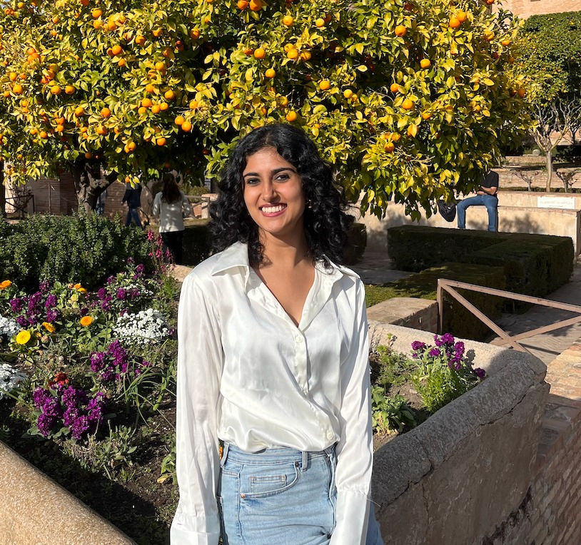

Advaita Singh
I am a second-year Predoctoral Research Professional at the George J. Stigler Center for the Study of the Economy and the State at the University of Chicago Booth School of Business, where I work with Luigi Zingales on how organized business interests influence judicial decision-making. My research interests are in political economy, the economics of media, and microeconomic theory.
I hold an MSc in Economic and Social Sciences from Università Bocconi and a BA in Economics, with a minor in Mathematics, from Ashoka University. My master's thesis, supervised by Massimo Morelli, develops a theoretical model of the electoral incentives that lead political elites to initiate referendums. While at Bocconi, I also worked as a research assistant to Livia Alfonsi (Harvard Business School) on a field experiment studying how mentor motivation affects the success of youth mentorship programs that support labor market entry.
Outside of research, I enjoy painting and cinema, and spent several years doing theatre.
